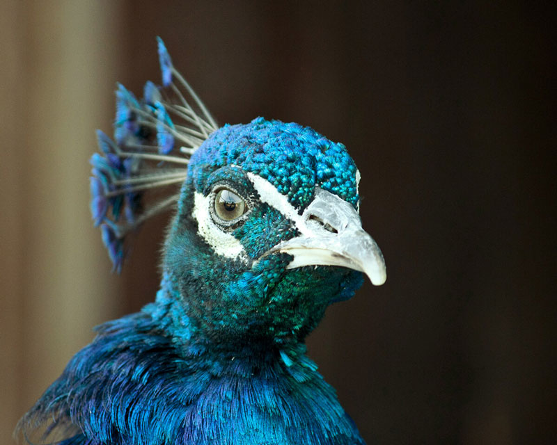
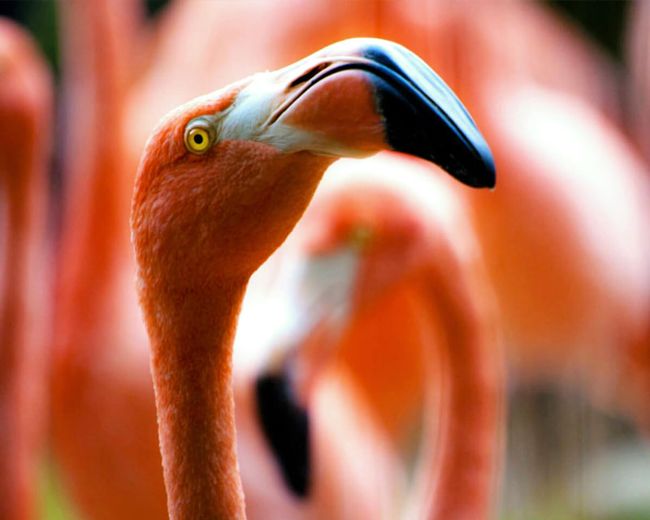
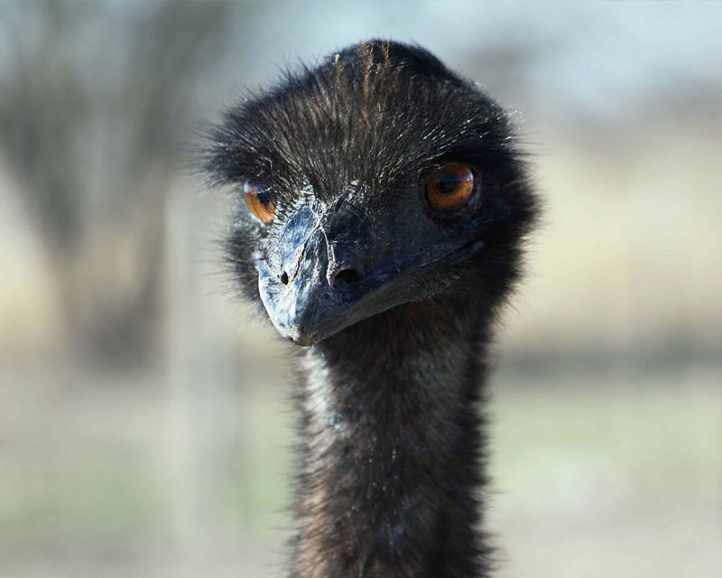
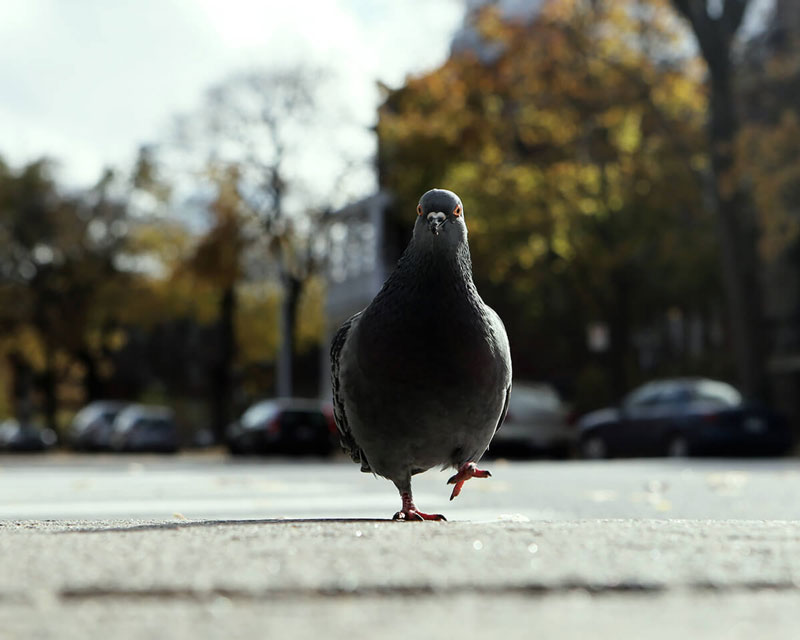
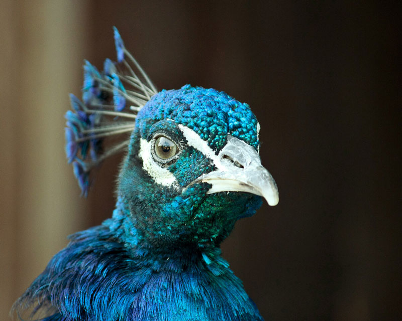
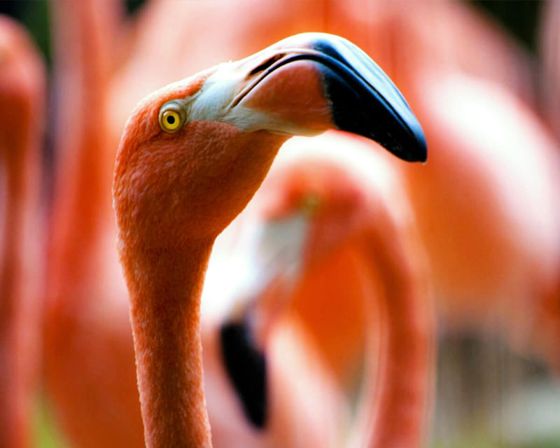
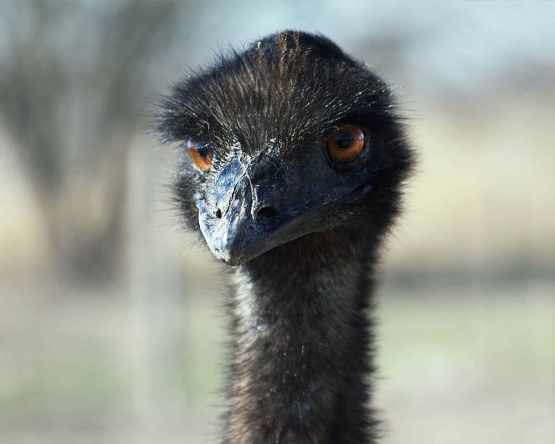
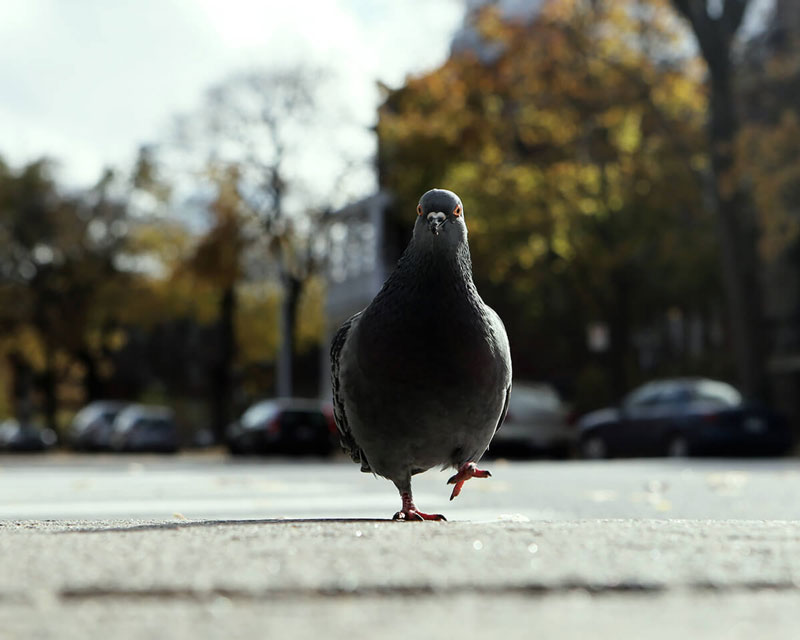

Strange Birds
Every bird tells a tale. This is the story of four bird characters and their adventures.
Spend any time watching your gardens birds and you'll soon discover a host of different behaviours. It might be a Blackbird preening its feathers, a group of Starlings whirling about the sky in a pre-roosting flock or a Greenfinch showing a Blue Tit who is boss.